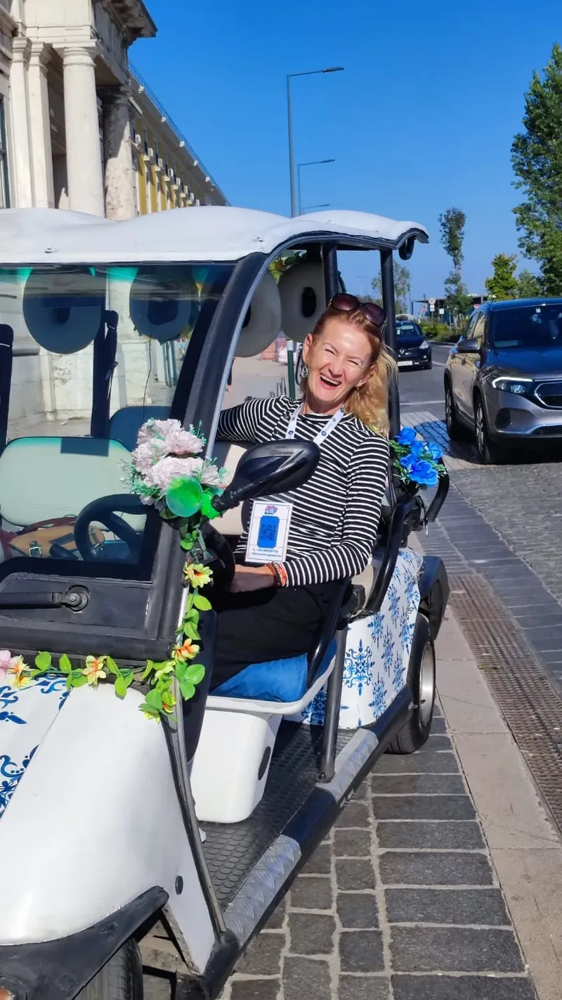

À propos de la Guide Susane
Votre hôtesse certifiée à Lisbonne.

Bonjour! Je suis Susane, votre guide locale à Lisbonne. Ma passion pour la riche histoire de la capitale du Portugal a commencé dès mon plus jeune âge. Pour moi, chaque monument, chaque belvédère et chaque pavé d'Alfama cache une histoire fascinante qui mérite d'être racontée.
Au fil des ans, j'ai perfectionné mes visites pour offrir non seulement un itinéraire touristique traditionnel, mais un voyage authentique à travers la culture, la gastronomie et les traditions de Lisbonne. J'adore partager des curiosités sur les quartiers historiques et donner les meilleures recommandations sur les endroits où écouter du Fado ou déguster la cuisine locale.
À bord de notre tuk-tuk bleu décoré de fleurs 100 % électrique, je vous invite à découvrir Lisbonne de manière durable, confortable et très amusante. Avec un point de rencontre au Hard Rock Café ou une prise en charge flexible directement à votre hôtel, je vous garantis un circuit inoubliable adapté à votre rythme.
Je parle couramment le portugais, l'anglais, l'espagnol, l'italien et le français, garantissant une communication proche et naturelle tout au long de la visite.